一项关于罕见疾病的新型诊断测试已经推出，这是一个非常可靠的测试。你决定自己测试一下，让你非常失望的是测试结果呈阳性。你有多担忧？
量化担忧是有困难的，在这种情况下，任何人产生忧虑都是正常的，所以让我们对这个问题稍作修改：你罹患这种罕见疾病的可能性有多大？
要回答这个问题，我们需要知道这个测试的可靠程度，并且我们要弄明白，患有这个疾病的罕见程度。所以在此提供一些数据。
罕见疾病的患病率为0.1%：千分之一的人处于这种令人担忧的状况。
这种疾病测试并不完美——没有任何诊断测试是完美的。假设它的可靠程度为98%。这意味着：
●假定有100名健康的人，测试报告将正确显示98人是健康的，但错误地显示2人患病。
●假定有100名病人，测试报告将正确显示98人患病，但错误地显示2人健康。
当然，我们想要一个更可靠的测试。但先让我们假设这是唯一可行的诊断。
我们的问题是：你的测试结果呈阳性。你罹患这种疾病的概率是多少？
答案似乎显而易见。我们刚才解释说测试的可靠程度是98%，看起来你的患病概率是98%，对吗？
假设一个有100万人口的城市，在这100万人口中，有1000人患病。那意味着有1000个病人，其他的99.9万人是健康的。
我们现在给这100万人做诊断测试。鉴于这个测试的有效性为98%，让我们来计算一下有多少人的结果呈阳性。
●在1000个病人当中，大部分，但不是全部的病人的结果将呈阳性。人数是1000×0.98=980。
●在999,000名健康人中，绝大多数人会得到一个好消息：他们没有这种疾病。但是2%的人会得到假阳性结果。阳性结果为999,000×0.02=19,980。
总而言之，有980+19,980=20,960人的测试结果为阳性。
现在我们可以回答这个问题了：如果你的测试结果呈阳性，那么你罹患这种疾病的概率是多少？
在两万多结果呈阳性的人中，实际上罹患此疾病的不到1000人。确切的概率是
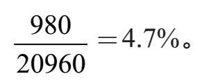
你罹患此疾病的概率不是98%。事实上，你患病的概率不到5%！
这是否意味着测试是毫无价值的？一点也不。
首先，如果医生怀疑你有此疾病，那么你不再是一个“随机”的病人。如果你有一定的症状，那么你罹患疾病的概率不是千分之一，但是或许是——可以这么说——四分之一。在这种情况下，主动的检测结果比毫无理由的随机检测更有意义。
计算：假设你所在的人群中有25%的病人，如果你的检测结果为阳性，你罹患这种疾病的概率是多少？答案见[1]。
其次，如果这种疾病是危险的，那么使用这个精确度为98%的测试可能是在大量人群中进行筛查的一个好方法。那些结果呈阳性的人可以接受第二步——可能更为昂贵的——后续测试，以便得到精确诊断。
当然，得到一个阴性的结果可以让人感到放心。但是，你放心的概率是多少？（答案见[e]）
精确度为98%的测试误导性可能很强，会违反直觉，但计算本身还是说明了一些问题。然而，观测原始数据并不能给我们带来直觉感受。
在下面的图中，大的长方形表示整个人口。包含在该人口中的小区域代表病人（左上方），该区域的其余部分代表健康个体。图上方的灰色条纹表示（两组人群）测试结果为阳性的人。白色区域代表测试结果为阴性的人（也是两组人群）。
注意：这个图中的比例不是完全符合给定的百分比（0.1%的病人，98%的测试精确度）。
图中两个区域分别代表生病的人（左上角的方块）和健康的人（整个长方形的其余部分）。横跨两个区域的灰色条纹代表测试结果呈阳性的人。注意，大多数人的诊断是正确的。病人范围中几乎每个人都为阳性结果（灰色）且健康范围内几乎每个人测试结果都为阴性（白色）。
该图说明了这个问题的关键特征：
●这种疾病很罕见——只有全部人口中的一小部分属于“罹患此疾病”类别；
●测试正确地诊断出了大多数罹患此疾病的人——灰色的横条几乎涵盖了所有的“病人”区域；
●测试对大多数健康人的诊断是正确的——灰色部分只占“健康人”范围的一小部分。
关键在于大部分的灰色条纹涵盖的是健康人，所以检测结果呈阳性更可能意味着你的检测结果是假阳性，而不代表你真的患病了。
我们已经计算了假设检测结果呈阳性时不健康人群罹患此疾病的概率。我们通过一个100万人的假设人口，计算出不同的人群，并得出了我们的答案。一个不那么“特别设置”的方法是直接使用语言和概率表示法，我们以这种阐释来结束本章。
这段讨论适用于那些研究过概率的人，只需要一点点复习，其他读者可以放心地跳过这一节。
对于事件A，我们用P（A）来表示A发生的概率。用P（
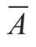
）表示A不发生的概率，并且P（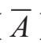
）=1–P（A）。对于事件A和B，我们用P（A∧B）代表A和B同时发生的概率。
符号P(A | B)表示在B发生的情况下A发生的概率，即“在B条件下A的概率”。根据贝叶斯公式得：
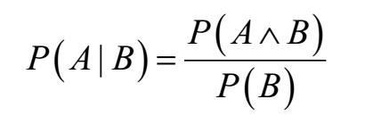
这个诊断测试问题的假设可以表示如下。设S是一个人罹患疾病的事件，设T为测试结果为阳性的事件。我们得出以下几点：
●罹患该疾病的人口占总人口的0.1%，因此P（S）=0.001。
●测试正确地显示一个人罹患该疾病的概率为98%，因此P（T | S）=0.98。
●测试正确地显示一个人健康的概率为98%，因此P（
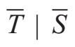
）=0.98。或者说，测试为假阳性的概率为2%：P（=0.02。现在的问题是：如果测试结果为阳性，那么病人罹患此疾病的概率是多少？
在符号中，我们要确定出P（S | T）。我们知道它等于P（S∧T） / P（T）。因此我们需要计算P（S∧T）和P（T）。
我们从P（S∧T）开始，它与P（T∧S）相同。根据贝叶斯公式得：
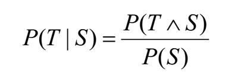
已知P（T | S）=0.98，P（S）=0.01
得：
P（S∧T）=P（T∧S）=P（T | S）P（S）=0.98×0.001=0.00098
接下来我们计算P（T）。已知P（T | S）=0.98，P（
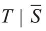
）=0.02。我们可以把P（T）写成P（T∧S）+P（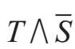
）。注意：P（T∧S）=P（T | S）P（S）=0.98×0.001=0.00098
P（）=P（）P（
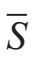
）=0.02×0.999=0.01998⇒ P（T）=P（T∧S）+P（
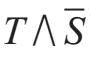
）=0.00098+0.01998=0.02096
最后我们再一次代入贝叶斯公式：
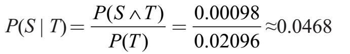
这个结果证实了我们之前的计算。
[e]如果你有症状：假设，由于你的症状，你罹患这种疾病的概率是25%。如果你的检测结果为阳性，你患病的概率是多少？假设和你情况相同的人为100万人。其中25万人是病人，其余75万人是健康的人。
•在25万病人中检测结果为阳性的为250000×0.98=245000人。
•在75万健康人中，检测结果为假阳性的为750000×0.02=15000人。
总共有26万人检测结果为阳性，其中24.5万人确实罹患此疾病。因此你患病的概率是245÷260=94.2%。
如果你的检测结果为阴性：假设你参加了检测，结果为阴性，你健康的概率是多少？
在我们这个100万人的城市里，有1000人是病人，99.9万人是健康人。有多少人检测结果为阴性？
•在1000个病人当中，2%的人结果为假阴性。
1000×0.02=20
•在99.9万名健康人中，98%的人结果为阴性。
999000×0.98=979,020
[1]所以你健康的概率是
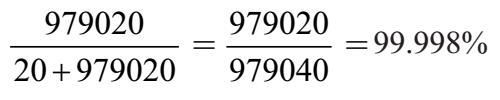
这可能看起来像是一个好消息，但要记住：即使没有检测，你健康的概率还是99.9%。所以检测所增加的值是微不足道的。